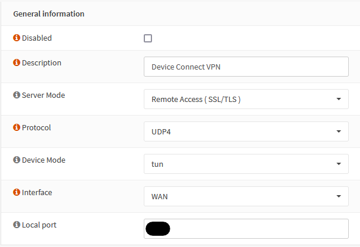
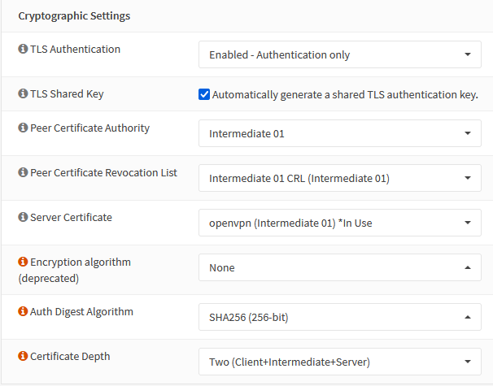
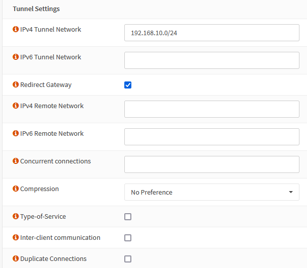
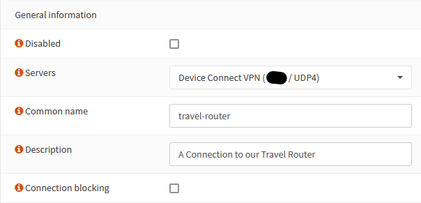
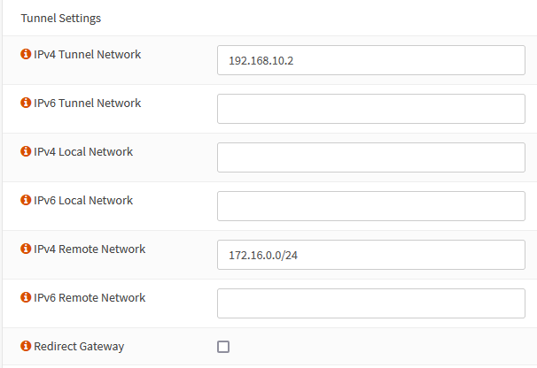
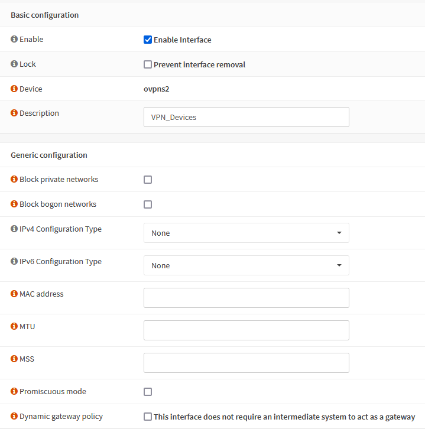
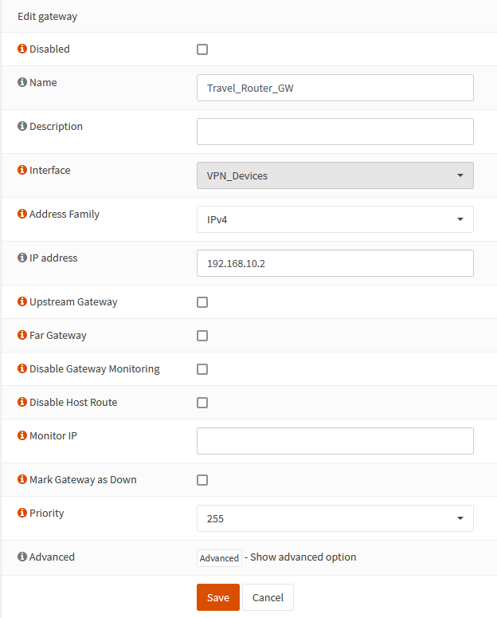
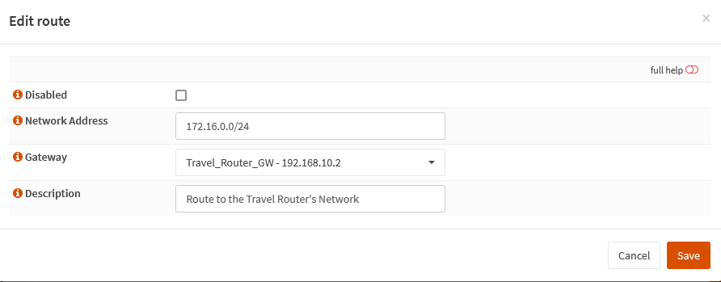
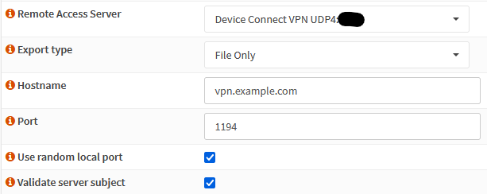

OpenVPN for remote routers on OPNSense
What if you could ship a device to someone with a working router, and when they connected it, you could connect through it just like you were on that remote network. If you wanted, you could even move it to another place, or even use it with a cellular modem, with all the benefits of being local?
One of the frustrations of this process is that it’s not as straightforward as you might think. Or rather, it is as straightforward as you think, but the way to do it isn’t what’s advertised on the tin, so to speak.
OpenVPN on OPNSense
To start, I’m using an OpenVPN server. I’m not going to go too in depth with that setup, because it’s actually quite straightforward and well documented. You need to set up a CA, and then a Certificate for your OpenVPN server.
Where this starts to get a bit strange is the next step. Our devices are going to be OpenWRT running on a variety of ARM SBCs and travel routers. We need the ability for them all to connect in, possibly at the same time, with no intervention, but critically, with no storing of plaintext credentials on the remote device. This will be an SSL/TLS only setup.

VPN Port ommited, but the default 1194 is fine
The critical bit is that this VPN is NOT set as Peer-to-Peer, but as Remote Access (SSL/TLS). This is done for two very important reasons.
The first reason for using the Remote Access scheme is that, while Peer-to-peer is technically what we want, in P2P mode the OpenVPN server does not push any information to the client. This is normally a good thing, but in this particular case, I’m not trying to simply create a connection, I’m trying to configure a remote device, which may require a poke when being configured, since the location it’s starting isn’t static.
The second reason is that it helps another tool, OPNSense’s Client Export utility, work in the way we want it to. In Peer-to-Peer mode, it’ll work, but in Remote Access mode, the generated ovpn file is much more usable.
Also, in the above there’s UDP4 specified. This is because without that, OpenVPN will try both IPv4 and IPv6, which can cause a lot of logging overhead. Because this is only using IPv4, we’re setting it to UDP4 to avoid that logging message.

My CA setup is a CA, then an Intermediate. Set this up however you like.
The Cryptographic settings are where we enter the Your Mileage May Vary zone. Almost all of this is down to how YOUR environment is set up. I have mine set up as a CA with Intermediates, and then a CRL and Server Certificate from that intermediate.
The only piece that needs to be set here is the TLS Authentication section. Either set it to Authentication, or Authentication and Encryption. This means that in order to open a connection to this OpenVPN instance at all, you need to have that TLS key.

The Tunnel Settings section
The only bits to note here are that Redirect Gateway is on, and Duplicate Connections must remain unchecked. Inter-Client Communication is up to you, as is the actual network range you are using. The Tunnel Network must not overlap with any other network on your device. It also must not overlap with any network on the remote devices either.
Under the Client Settings, the only thing you need to check is the Dynamic IP. Only check DNS Servers if you run your own, since OpenWRT has a system we’re going to take advantage of later.
Devices
Let’s say we have a small travel router we want to use with a cellular modem. It’s going to need a trusted certificate, so set one up. How it’s made is up to you, but two things are very important.
First, the certificate must be Combined Client/Server. This is due to a quirk of usage, specifically since our device is technically a server, yet in this case it needs to authenticate like a client, so it must have client flags.
Second, you have to have a unique Common Name, since this Common name (not the Descriptive name) will be the name of your device.
Now with that certificate made, move back to the OpenVPN section and go to Client Specific Overrides.

Create an override and put in the exact name you gave for the Common Name. Now, any connection made to this VPN with that Certificate will pick up the information in this override.

The IPv4 Tunnel Network field is actually a bit misleading. Because we already configured our network in the base VPN, we only need the IP this device will use when connecting to the VPN. This means that the client that connects to this VPN using the certificate we made above will always be at this IP. This is why we must also make a new certificate for every new device we want to connect.
Now, the remote network on our travel router is 172.16.0.0/24. If we make our local router aware of this, then it can route packets to that network. While not strictly necessary, this can be very handy for connecting to services or devices on that network from the networks connected to the OPNSense router.
This can also be used to connect to something that’s not an OpenWRT device, such as a connection to a network hosted on a hosting service like DigitalOcean or AWS. If your local router is aware of it, it can route to it.
Sorta.
Where it starts to get messy (Interface, Gateway, and Route setup)
This is where what’s in the OpenVPN configuration is partially a lie. In order for this to work, you will also need to set up an interface, a gateway, and a static route.
The interface is relatively straightforward. Assign your VPN interface to an OPT item (it will be an ‘ovpns’ interface). Then, in the configuration of that interface, simply make sure the interface is enabled. That’s it.
Under Interfaces > Assignments

All that is needed for this interface
The reason for this is that the OpenVPN server will handle IP addressing, so OPNSense doesn’t need to configure it in any way. However, we need in interface to set up a gateway, and we need a gateway to set up a static route.

The first thing to note is the IP address, which is what was configured in the override.
The second thing is to enable Gateway Monitoring. It’s very likely this gateway will go up and down, so having some statistics or other information on it will be a good idea.
The third thing is the Interface. This should be the interface you just made for this VPN instance.
Now, onto the static route.

The Network Address is the remote network of the Travel Router
Finishing Up with OPNSense
The last thing to do is to go to the OpenVPN Client Export tool and use it to bring out our configuration.

Replace the Hostname and Port with your own
Click on the little download icon next to the Descriptive name you gave your certificate, and boom, full OpenVPN config file, complete with embedded certificates!
Final Thoughts
For each device, a new certificate, override, gateway and static route will be needed. You can’t just re-use the same certificate over and over as whenever that certificate connects, it will be treated like your travel router, so if it’s not, things will start to get weird. This is why this is device-based, as each device needs all the configuration listed above.
I’ll put the connecting of OpenWRT in a separate post, since this one is starting to get a bit long. The connecting is fairly straightforward, it’s the routing that can get a bit weird.